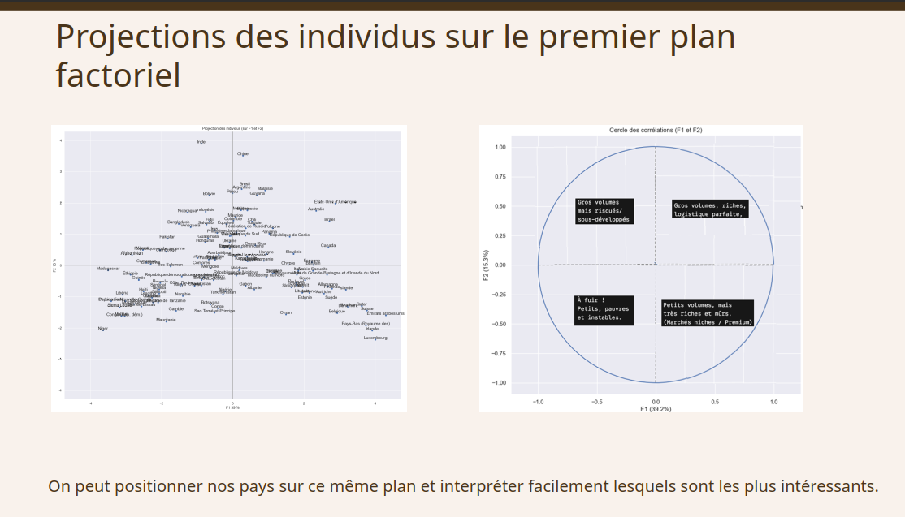

Étude de marché international — La Poule qui chante (ACP + Clustering)

Mission réalisée pour La Poule qui chante, entreprise française d'agroalimentaire spécialisée dans le poulet bio. Le PDG souhaitait évaluer une expansion à l'international, sans aucune contrainte de pays ou de continent définie au départ. L'objectif : identifier des groupements de pays pertinents à cibler pour l'export, à présenter au COMEX dans un format accessible à un public non technique.
- Source de départ : données New Food Balances de la FAO, fournies par le commanditaire.
- Enrichissement via analyse PESTEL : 9 variables construites à partir de sources complémentaires (FAO, Banque mondiale, Our World in Data) couvrant les 5 dimensions PESTEL — score de polarisation politique, PIB par habitant, IDH, population, import et consommation de poulet par habitant, indice de performance logistique (LPI), accès à l'électricité, distance à la France.
- Volumétrie finale : 143 pays retenus après nettoyage, couvrant 7,57 milliards de personnes.
- Feature engineering : 3 variables recalculées en ratios par habitant (PIB, import et consommation de poulet), pour rendre les pays comparables indépendamment de leur taille.
- Collecte et fusion de plusieurs sources de données hétérogènes, harmonisées sur un référentiel commun de noms de pays.
- Analyse en Composantes Principales (ACP) pour réduire la dimensionnalité : l'axe F1 (39,2 % d'inertie) synthétise le niveau de développement économique et les importations de poulet ; l'axe F2 (15,3 %) capture la taille du pays, la consommation et la stabilité politique.
- Classification Ascendante Hiérarchique (CAH, méthode de Ward) : dendrogramme découpé en 5 clusters (36, 28, 2, 45 et 32 pays). Vérification par tableau croisé que les clusters ne correspondent pas aux continents — signe que le niveau de développement pèse plus que la proximité géographique ou culturelle dans le regroupement.
- K-means en complément, avec méthode du coude pour choisir le nombre de clusters (3 retenus).
- Croisement des deux méthodes : extraction des pays présents à la fois dans le meilleur cluster de la CAH et celui du K-means, pour ne retenir que les recommandations robustes aux deux approches.
Ciblage géographique par algorithme : L'intersection de deux méthodes de clustering a permis d'isoler une sélection restreinte de pays prioritaires. Ces marchés se caractérisent par un niveau de développement élevé, des infrastructures de base optimales et d'excellentes performances logistiques, garantissant ainsi une chaîne d'approvisionnement fiable.
Analyse de la maturité de la demande : Au sein de cette sélection, l'étude a mis en évidence un sous-groupe de pays affichant une consommation de produits importés nettement supérieure à la moyenne. Cet indicateur valide la pertinence de cibler des marchés déjà réceptifs aux importations, limitant ainsi les risques liés à l'évangélisation d'un nouveau marché.
Recommandation stratégique au COMEX : Présentation d'un plan d'action préconisant de prioriser la performance logistique et la présence d'importation de poulet. Cette approche, guidée par la donnée, a permis de démontrer qu'il était plus rentable d'écarter les pays très peuplés mais à forte consommation de poulet, ces derniers ne répondant pas aux critères de viabilité croisés identifiés par les modèles.
- L'ACP est sensible aux valeurs extrêmes et ne capture que les relations linéaires entre variables — une méthode non linéaire comme le t-SNE pourrait affiner l'analyse, comme évoqué en soutenance.
- Les clusters ne correspondant pas aux continents est un résultat contre-intuitif intéressant, mais qui mériterait d'être creusé : est-ce un vrai signal économique, ou un effet du choix des variables PESTEL retenues ?
- La variable de distance à la France (critère écologique) pèse peu dans le résultat final — des pays éloignés comme l'Australie ou la Corée du Sud restent recommandés malgré la logique de proximité évoquée en préconisation. Si la proximité est réellement une priorité stratégique, elle devrait être pondérée plus fortement dans une itération future.